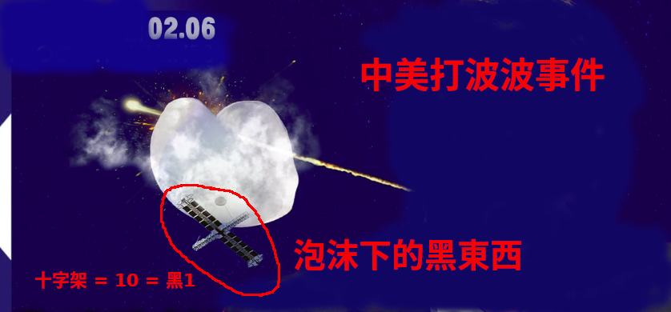

First thing first,SOS from mindControlled talented girls:

I am "MendingKids"! Logo MendingKids = kids in need of help!spread the word ! as she said in the picture above! GEM is a famous top pop music star in China,she sent out secret SOS messages in ways of art performances, one of which is a post in weibo saying two words "自由（freedom)“ ,attached with a picture , in which she stands behind metal bars wearing leather pans! another is video clips showing she is pretending as a child taken by adults traveling around in US. even she put herself in a luggage!
anyone still remember 설리, a Korean kpop star, also sent SOS messages by public strange behaviors before she “hung“ herself up at home.

西子 世人皆唱東坡詞，無人知我歌中淚。胭脂淚痕君不見，肚藏淚酒君不知。法律珠鍊人中鳳，舞臺深處天牢夢。鍍金屠門千豬過，三寸魷魚萬人舔。君入西子渡津口，她閱君腦千秋雪。A implied response from her to my "poems",written in Nov 10,2022, 2 days before her TV show on Nov 12,2022, my "poems" describes a top mindcontroled talented female singer who has become a slaver of lawsuits and forced to shoot some dirty movies as blackmail evidence, but can't prove her situation,what she can only do is to suffer the physical and spiritual torture,and swallow the pain alone. the title 西子1(xi zi) = 西施1(xi si), who is a legend beauty in ancient China,later become a symbol of girl in heart(情qing人ren眼yan裏li出chu西xi施si= 西施（xi si) is the girl of sparkle in lover's eyes. ) A brief explanation to her implied message. She said she is 西施1 (xi si)1 , Cloth in red 2= 紅顏2 = girl in heart and knows your heart. 苦瓜汁3 = Bitter melon jiuce3 = pain and torture that she has been swallowed. 線索4(xiansuo)1= the hint from her to disclose the secret.
The Deep State has controlled so many talented girls,making them slavers! I am not joking,please read more here ... translation is walking on its way to you,we bring real information onto your hands. you will be able to read the hidden information on news, and embrace a real world,good or bad, love it or hate it,it is time to say NO to fake news and information manipulation. SOS messages from GEM, https://github.com/brianwchh/SOSfromGEM and 2507:carrying God to heaven pitfall, the hidden secret of the world in GEM's musics, https://github.com/brianwchh/2507andworld of heart, https://github.com/brianwchh/worldofheart_v2
Why ChatGPT is so powerful and even google's Bert looks like a toy when compared to ChatGPT ?
Anyone wonder where did the training data come from?
the answer is :
mindcontrol , because Microsoft is far far far more evil than Google!
The so-called Devil's selected people has the secret mindcontrol technology that can read minds, and that others don't have! Maybe it is for sure to say Google is going to lose its leading position in AI because it lack of the key training data.
You need certain technologies from Weather balloon ! Look, I say, it is a real weather balloon ! Not UFO !
when I see so many so many people embracing ChatGPT amazingly, I see a picture of feature where all men are dancing in heaven !

You are next !!!

the real warning messages behind the news ! Did you read the SOS signal from Chinese Government ?

under the pandemic hell,embrace your future heaven, a gift from the bubble ballon. The concentration camp history repeated itself,but this time people don't recognize it! Hollo, people with wisdom!
bible golden version, GEM‘s music「bubble」, which implies the sweet lies. most of GEM's musics is alike 「bubble」，which hides some top secrets about the world. Bible is real bubble, while 「bubble」is the real bible. also there are some strange coninsidences that also can reveal some unbelievable secrets. I am going to disclose them in coming videos series. stay tune! we need to work together to defeat their Great Conspiracy. We are in the middle of information war and Unrestricted War that went beyond bounds,and most of us have not yet realized that it has been started by the deep state since 2019. we need to spread the words and wake up more people, thanks.
A piece of extra interesting reading material : mindcontrol tech to make people become religious and the liquid thaccine, https://vimeo.com/802464713 , use your own discretion, I did not say that guy is Bill Gates in the first video, it does no harm to watch it after all.